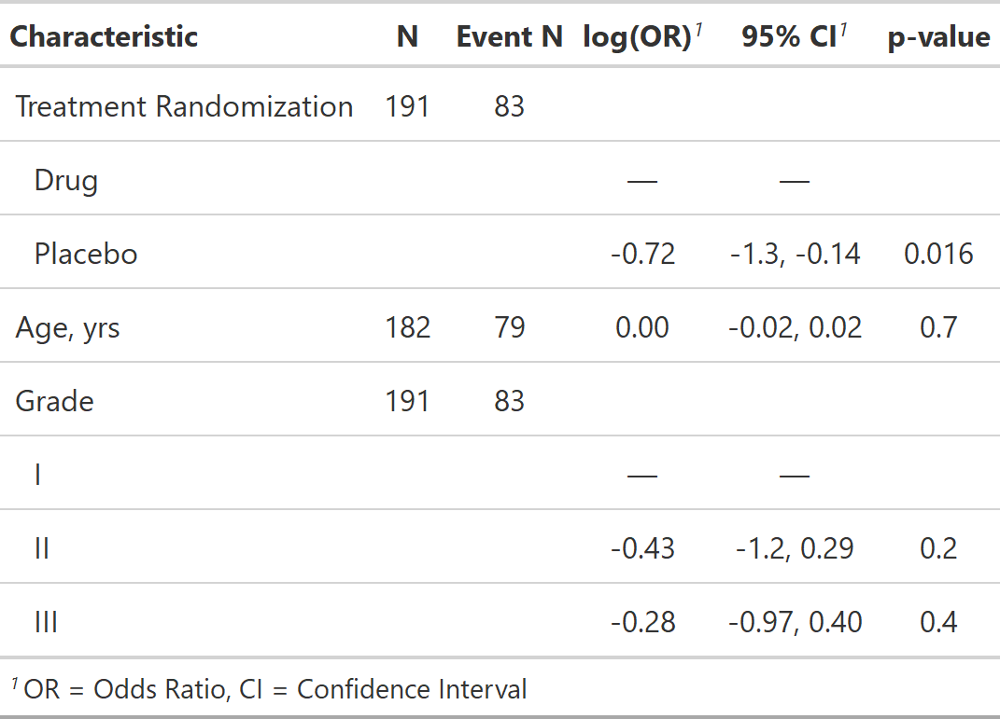

| add_nevent.tbl_uvregression {gtsummary} | R Documentation |
Adds a column of the number of events to tables created with tbl_uvregression. Supported model types include GLMs with binomial distribution family (e.g. stats::glm, lme4::glmer, and geepack::geeglm) and Cox Proportion Hazards regression models (survival::coxph).
## S3 method for class 'tbl_uvregression' add_nevent(x, ...)
x |
|
... |
Not used |
A tbl_uvregression object
The number of events is added to the internal .$table_body tibble,
and printed to the right of the N column. The number of events is also
accessible via the inline_text function for printing in a report.

Daniel D. Sjoberg
Other tbl_uvregression tools:
add_global_p.tbl_uvregression(),
add_q.tbl_uvregression(),
bold_italicize_labels_levels,
bold_p.tbl_stack(),
bold_p.tbl_uvregression(),
inline_text.tbl_uvregression(),
modify_header(),
sort_p.tbl_uvregression(),
tbl_merge(),
tbl_stack(),
tbl_uvregression()
tbl_uv_nevent_ex <-
trial[c("response", "trt", "age", "grade")] %>%
tbl_uvregression(
method = glm,
y = response,
method.args = list(family = binomial)
) %>%
add_nevent()